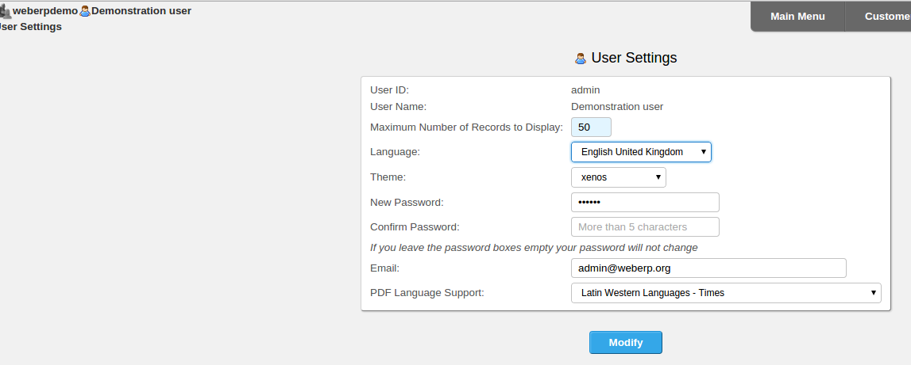

webERP can be translated to any language so that the entire web-interface is displayed in the language of any user. The system can display different languages for different users - all at the same time - depending on the setting of the language in the individual users' settings.
Each user can select their language by clicking on their user name at the top left of every screen immediately to the right of the company name. Clicking on your user name this brings up the user settings screen below:
A dropdown box displaying all the available translations is available. Also, the character set of PDFs must also be selected from the 3 choices to create small portable pdf files using the CID fonts bundled with webERP. The preferred user display theme can also be selected from this screen.
If your language is not listed in the drop down box it is possible to create a new translation. The recommended procedure to create a translation is as follows:
It is worthwhile investigating the poedit package as this has some time saving features for creating gettext translation files.
Return the file containing your translations to submissions@weberp.org
An archive of the new language directory and instructions will be put up on sourceforge so everyone can access your translation.
webERP uses the GNU gettext package for language translations. For the gettext library to be used - which must be installed on your webserver, PHP must be compiled with gettext functions. However, since version 3.01 thanks to Briain Gomez and the authors of PHP-GETTEXT Danilo Segan and Nico Kaiser their php class to enable the translations to work (albeit more slowly than the gettext library functions) is bundled with webERP so translations will still work even though gettext is not installed.
The gettext translation files are held in the locale directory, under this directory there are sub-directories for each locale, a five character code representing the language to be used. eg en for English an underscore and then another two character code in capitals for the local version of the language eg US for USA - so the full locale code becomes en_US. For english of the Great British variety - the full locale code is then en_GB - this is the default language that webERP is written in. The locale for this code needs to be installed on the web-server - all locales installed can be inspected using the command line #locale -a on a linux web server.
New directories will need to be made up if a translator wishes to have a local version for their language. Under the locale directory the five character locale abbreviation code directory there is a further sub-directory called LC_MESSAGES - this is where the translation files exist. There are two files in each of these directories:
Any text editor can be used to edit the .po file (GNU Emacs contains specific functionality for editing .po files there is a special PO-Mode) - there is also a utility called Poedit - Gettext Translations Editor which is often recommended by translators.
The translation is performed by translating the strings in the messages.po file into the other language. It is important to work on the most recent messages.po file from the locale/en_GB-utf8/LC_MESSAGES/ directory in the SVN. This can be downloaded from the subversion repository
The messages.po is made up of sections
E.g. for a French translation file
#: AccountGroups.php:8 index.php:890
msgid "An example string in English that needs to be translated"
msgstr="Une chaîne d'exemple en anglais qui doit être traduite"
the line #: AccountGroups.php:8 index.php:890
means that the string following is used in the AccountGroups.php script on line 8 and the index.php script on line 890. It could be useful to understand the context of where the script is used. Strings that are used several times throughout the application only need to be translated once. In some cases the #: line showing where the string is used can be quite an extensive list of scripts.
msgid "An example string in English that needs to be translated"
this line is the english string which is to be substituted by the text in msgstr. If the value of msgstr is empty - "". gettext will return the english string.
The effort of the translation is to edit the messages.po file and enter the language translation within the inverted commas of the msgstr. All that is required then is to take the messages.po file from the en_GB-utf8/LC_MESSAGES folder and edit it with translations for your language.
Make a copy and edit the file provided entering the translations for the strings labelled msgid in the string labelled msgstr. Although every attempt has been made to avoid it, watch out for html strings embedded inside the strings the html will also be required in the translated string. Also the translation file header information - with the translators details so that you are accorded proper recognition for your contribution.
A new folder under webERP/locale/ needs to be created with the locale abbreviation for your language - note that webERP requires utf-8 locales - some examples:
say you are creating a German translation you need to create the folder
webERP/locale/de_DE.utf8
and the folder below this called LC_MESSAGES
webERP/locale/de_DE.utf8/LC_MESSAGES
To allow the language to be selected it must exist in the webERP $LanguagesArray this is an array of all available languages that webERP has been translated into and is maintained by webERP in the file
/webERP/includes/LanguagesArray.php
This array as as it's key the locale code for the language for British English the locale code is en_GB.utf8 - and for each element there is a sub-array of the following named elements for each key in the Languages Array
The characters in this array for the selected locale are used by the functions used throughout webERP in the includes/MiscFunctions.php file for locale_number_format() to display numbers in an appropriate format for the selected language.
e.g.
Many people in India speak English but want to see numbers formatted in Indian Numbering System. The Indian Numbering System uses separators differently from the Arabic Numbering System; besides the three least significant digits of the integer part, a comma divides every two rather than every three digits, thus:
Having a record in the LanguagesArray.php and an empty folder under ~/locale/en_IN.utf8 allows us to have English (British) language --no strings translated as there is no matching strings in a messages.mo-- but the number format in Indian Numbering System. See MiscFunctions.php in Manual, New Scripts, Directory Structure.
The .po file starts with some initial comments which should also be completed
"SOME DESCRIPTIVE TITLE", - should be replaced with webERP - LANGUAGE Translation File - where LANGUAGE is the language being translated into
# FIRST AUTHOR , YEAR. - should be your name and email address - with the year of the work being done
Should be webERP - version number
This is the date of your last entries in the file
This is your name and email address for users of this language to contact should some translations be unclear
Replace `CHARSET' with UTF-8 this characters set has characters for all languages and webERP is written with care to handle mutli-byte characters (because utf-8 character set contains so many characters several bytes must be used to uniquely identify each character correctly).
Set this to 8bit
Once this exercise has been completed the file must be returned to the project administrator: submissions@weberp.org for the .mo file to be created. The new directory will be returned in a zip file for extraction from the webERP directory. The language will then be added to the webERP system for the benefit of other users as well.
Upon logging into the system each time the system sets the language used by looking up the user information to see what language they have set, The user can change which language is set by clicking on their user name at the top left which brings up User Settings. Changing the language setting will activate the new language right away upon saving the change. Only languages for which there is a directory under the locale directory are allowed to be selected by users.
webERP comes bundled with some on-line tools for adminstering translations - there are some issues with maintaining translations using these facilities - in particular certain characters cause problems for the scripts and character encodings can be lost. It is therefore NOT recommended to use these except for ad-hoc maintenance where a backup of the most recent messages.po is held elsewhere. The recommended procedure for maintaining translations are discussed above and the remainder of this narrative is depreciated.
The following explains how to use the language translation utilities provided with webERP for the purpose of adding languages and maintaining their translations.
In general before using the utilities you need to click on your user name at the top left in order to access user preferences. Select the language to translate and click on Modify. The language utilities all use the currently selected user language. If the language you wish to use is not there then a new translation can be initiated with the 'Add a New Language' utility - see below. By default a new install of webERP will only have the english - en_GB available. The most recent submitted language packs are available from the sourceforge webERP page
Translations are maintained from the utilities menu - this does not have its own link on the main menu since it is an area that only the system administrator should be able to access. Unauthorised modification of translation files is therefore discouraged. The utlities menu is Z_index.php - so you can modify the URL on the main menu by prefixing it with Z_ - this brings up the utilities menu - only if you have system administrator permissions on your user account. The link to 'Maintain Language Files' is where the translations are managed.
There are four translation utilities availble:
Note that the discussion about what the system does is intended for those handling the system and its files. It is not necessary to understand if you are only dealing with translation.
The system has one default language file. When a new language is created it makes a copy of this file for itself that can be edited for that language. The rebuilding this system default language file consists of it looking through every system code file (script) in order to create a new system default language file. In this way, any modifications or additions to strings will be contained within the newly created file. This can be done before creating a new language in order to start with the very latest strings.
Use this utility to create a new language. It is important to recognise that only languages that have appropriate locale files on your web-server can be added. The language identifier must match with the language files on the web-server. Enter the language in the form xx_XX where the first two characters are the lower case standard code for the language such as en for English and the last two are the upper case standard code for the country such as US for United States. This example would be en_US. The underscore must separate the language and country for a total of 5 characters. The Proceed button must be clicked after entering the language in order for it to be created. The system then creates a new language directory under the locale directory and an LC_MESSAGES directory under this new language directory. Then, in this new locale/xx_XX/LC_MESSAGES directory it copies accross the Default Language file (messages.po). Initially there are no translations in the new messages.po file.
Once the new language has been created, to use the language translation utlities to maintain the new translation you must change to the new language. To change language, the user name shown at the top left of all webERP screens is clicked on and the drop down box should now show the new language created above. Select the new language to enable you to operate with the translation utilities.
It is not necessary to know about the structure of the language file if using the translation tools provided. The details below are presented for infomation purposes only. The language file - messages.po consists of:
The language file header can be modified using this utility. One important reason for modifying the header is to modify the charset to what is suitable for the locale. For en, the charset is usually set to 8829-1 or something like that. After editing the various areas of the header make sure to click on Enter Information at the bottom in order to save the changes.
The majority of the translation work is done with this utility. First select the language you wish to edit and then there is a choice of modules. For a complete translation of the entire system all of the modules must be completed. Many prefer to do index.php and includes/header.inc first in order for the main menu to be in their language. From that point, the most important modules can be done first or all can be done alphabetically. Some memorable system should be used though in order to remember which modules still need translating in subsequent sessions.
Once the language and module have been selected then click on Proceed. A handy interface comes up with all of the strings listed that are within that module and beside them an area to enter your translation of that string. On the right is a list of the line number where the string occurs in the code within the module. After entering some translations click on Enter Information in order to save all changes.
If there has been some development work on your version of webERP it is possible to merge any new strings that have been created by the developers with the existing language file and create a new messages.po that contain all the strings required by the system. If some messages still come up in English but they don't appear when editing the module for that screen then you know you must Merge the existing messages.po with any new messages. To ensure all strings are extracted by the gettext utility it is important to ensure that the "Rebuild the System Default Language File" is run first. Then from the "Edit a Language File Module" screen click on the "Refresh Messages With Latest Strings" - this merges the newly creates master messages.po file created by the Rebuild with your existing translations.